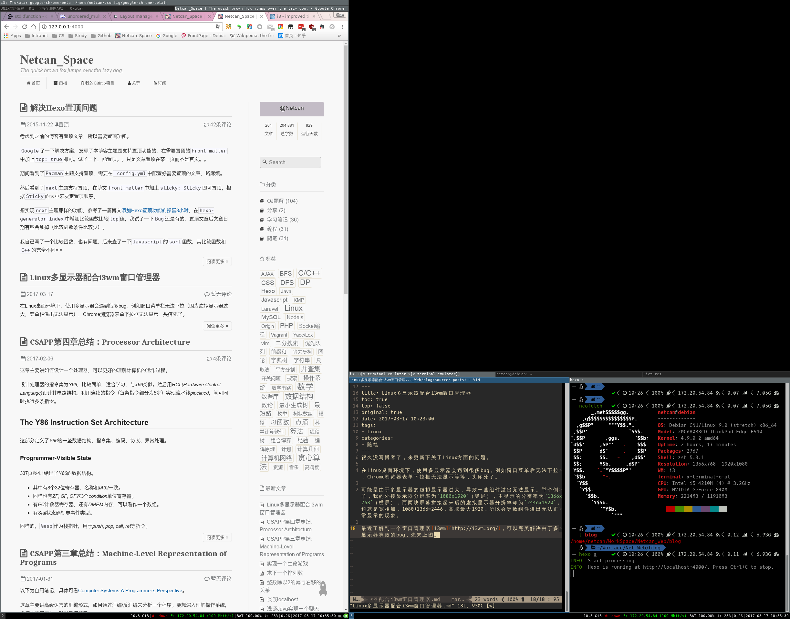

很久没写博客了，来更新下关于 Linux 方面的问题。
已知问题
在 Linux 桌面环境下，使用多显示器会遇到很多 bug，例如窗口菜单栏无法下拉，Chrome 浏览器表单下拉框无法显示等等，头疼死了。
可能是由于多显示器的虚拟显示器过大，导致一些组件溢出无法显示。举个例子，我的外接显示器分辨率为1080x1920（竖屏），主显示的分辨率为1366x768（横屏），而两块屏幕拼接起来后的虚拟显示器分辨率却为2446x1920，也就是宽相加，1080+1366=2446，高取最大 1920，所以会导致组件溢出无法正常显示的现象。
最近了解到一个窗口管理器i3wm，可以完美解决由于多显示器导致的 bug，先来上图。图为 2 块显示器的效果，黑色部分不存在。

官方视频：
安装 i3wm
因为 debian 源中有，可以直接安装，之后选择窗口管理器为 i3：
$ sudo apt-get install i3 i3status
$ sudo update-alternatives --config x-window-manager
There are 3 choices for the alternative x-window-manager (providing /usr/bin/x-window-manager).
Selection Path Priority Status
------------------------------------------------------------
0 /usr/bin/metacity 60 auto mode
* 1 /usr/bin/i3 20 manual mode
2 /usr/bin/metacity 60 manual mode
3 /usr/bin/mutter 60 manual mode
Press <enter> to keep the current choice[*], or type selection number: 1运行i3-config-wizard，将默认为 i3wm 配置，配置文件在~/.config/i3/config。
然后重启，若没效果，就注销登录，然后选择 i3 作为默认的窗口管理器。
配置双显示器
我的显示器布局如图：
0 1080 1080+1366
0 A--------------------
| |
| |
| |
| |
| |
| |
| |
| HDMI |
| 1080x1920 | (1080, y)
| B-----------------------------
| | |
| | |
| | eDP |
| | 1366x768 |
| | |
| | |
1920 --------------------------------------------------首先要确定的是 2 个显示器的位置（屏幕左上角坐标来确定）关系，HDMI 显示器在左边，eDP 显示器在右边，左屏做扩展屏。
注意左上角的坐标为(0, 0)，也就是说 HDMI 显示器的坐标为(0, 0)。然后是 B 点的坐标为(1080, 1920-768=1152)，也就是 eDP 显示器的坐标。
最后利用 xrandr 命令，如下：
$ xrandr --output HDMI-1 --auto --rotate left --pos 0x0 --output eDP-1 --pos 1080x1152
写进 i3wm 配置文件中：
$ exec xrandr --output HDMI-1 --auto --rotate left --pos 0x0 --output eDP-1 --pos 1080x1152
也可以使用 工具 来配置：
$ sudo apt-get install arandr
$ arandr
i3wm 配置
配置壁纸，将壁纸放到~/Pictures/wallpapers 中，然后编辑 i3wm 配置文件：
$ sudo apt-get install feh
$ vim ~/.config/i3/config
exec feh --randomize --bg-fill ~/Pictures/wallpapers/*
配置音量键：
# Pulse Audio controls
bindsym XF86AudioRaiseVolume exec --no-startup-id pactl set-sink-volume 0 +5% #increase sound volume
bindsym XF86AudioLowerVolume exec --no-startup-id pactl set-sink-volume 0 -5% #decrease sound volume
bindsym XF86AudioMute exec --no-startup-id pactl set-sink-mute 0 toggle # mute sound
配置屏幕截图：
bindsym --release Print exec gnome-screenshot
bindsym --release Shift+Print exec gnome-screenshot -a
bindsym --release $mod+Print exec gnome-screenshot -w
剩下的就是看 i3wm 的官方文档了。